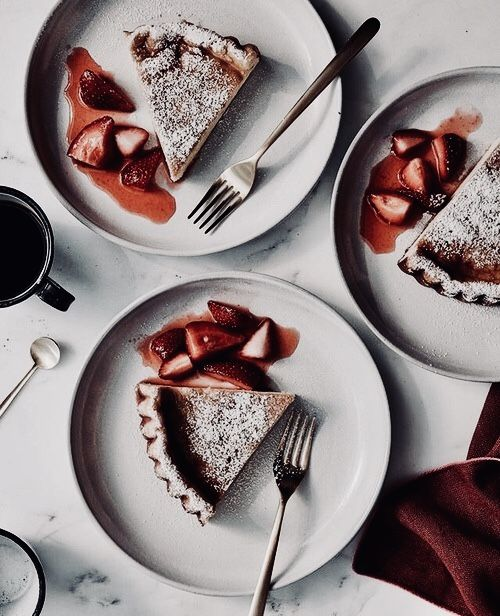
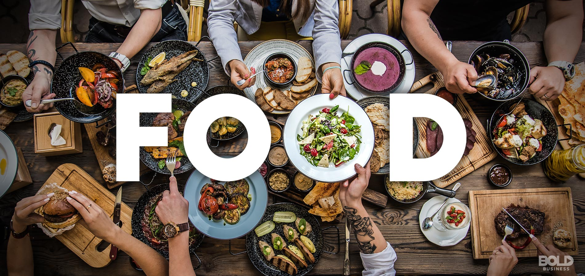

Meal selctor
My colleague and I always spend alot of time before work contemplating what we are gonna eat for the day.Recently i've realised that this consumes alot of time, so with my new found knowledge in python I decided to create a meal selctor, to make the deciding process more time convenient and less tedious.
For this project I created two different list, one for food, and another for drinks, Using the random module a random selection is chosen for both parties.
Some updates will be made to this projct to make it more useful, like duration or how long it would take to get your food , cost, whether delivery is required or not. And as I advance and learn more about python I would also want it to have more visual orientation, display pictures and help you select a meal based off of mood or meal type(i.e spicy, low calorie, cold, hot, contains a specific item, etc).